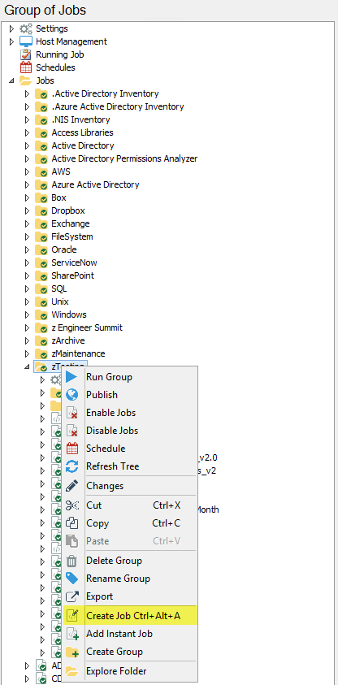
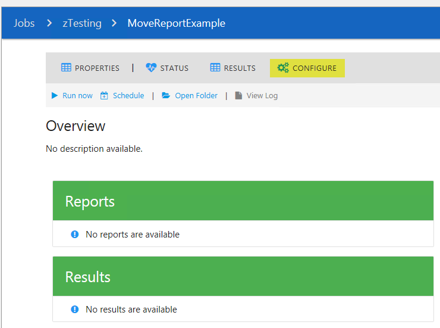
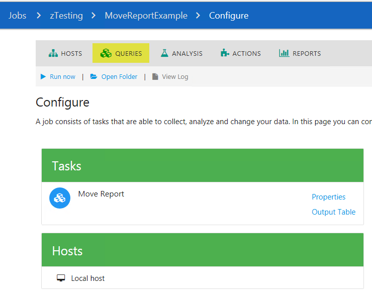
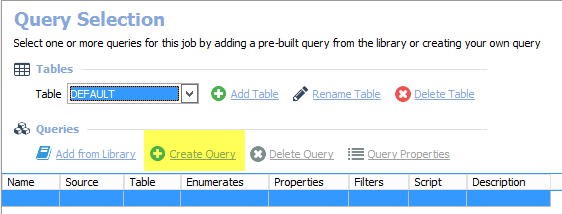
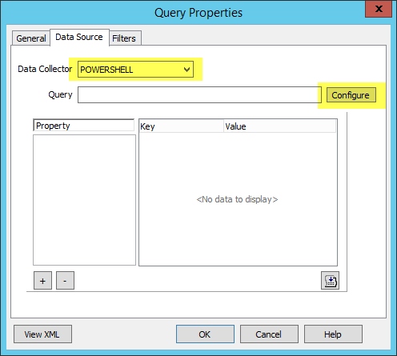

Summary: Need to keep all the csv files produced by the reports in a folder accessible to users.
Issue: Need to store all the csv files produced by a job report in a folder accessible to any user. Currently, the product report has two options that partially satisfy these requirements:
- Publishing the report to a custom path, or;
- Emailing the report csv to the users.
These options have drawbacks, however.
- When publishing to a custom path, files are overwritten each time, and;
- Emailing reports can inundate the end users and take up space in mailboxes.
Instead, a more preferable solution may be to copy the reports before they get overwritten and place them in a central location of preference. This also allows to keep as many reports as are needed. Retention options have been added to the script as well so the reports don’t keep accumulating indefinitely.
Instructions:
The Custom Job
- For our example, we'll be exporting the report created by the 2-AD_Changes job located in the .Active Directory Inventory group.
-
First we'll need to create a new job by right-clicking the desired group and choosing
'Create Job'.
- Name the new job, for our example the job will be named 'MoveReportExample'.
- With the 'MoveReportExample' job selected, click 'CONFIGURE' on the right hand pane.
- Click 'QUERIES'.
- Click 'Create Query'.
- Name the query as desired. Click the Data Source tab and select 'POWERSHELL' from the Data Collector drop-down menu, then click the 'Configure' button.
- In the PowerShell Data Collector Wizard click 'Next' until you reach the 'Edit query' page.
- Copy the PS script below and paste into the Edit PowerShell Query in StealthAUDIT.
Copyright 2018 STEALTHBITS TECHNOLOGIES, INC.
ALL RIGHTS RESERVED
Written by: Renato Espinoza
Date: 12/2018
Purpose: Copying and renaming output csv files to an alternate location before they get updated by the next report creation
#>
################### Variable Declaration ###################
#CHANGE the path below to point to the job report files of your choosing
$currentLocation = "C:\Program Files (x86)\STEALTHbits\StealthAUDIT\Jobs\GROUP_.Active Directory Inventory\JOB_2-AD_Changes\OUTPUT\Reports\v3\WILDTURKEY\Pages\Data"
#CHANGE THE DESTINATION PATH (this is the path where all the copies of the files will reside.
#NOTE that the directories must exist prior to running the job, or PowerShell will return an error: 'Could not find a part of the path...'
#Additionally, the service account running the job must have permissions to write to the directory
$destinationPath = "C:\Test\SA Report Archive\JOB_2-AD_Changes"
#Can also use UNC Path, e.g., $destinationPath = " \\FileServer\c$\Custom\Reports\Path\Chosen\By\Customer"
#Exported CSV are named with GUID of the report. To better know which job the report came from we can append the job and/or report name to the copied CSV file
$jobName = "2-AD_Changes_"
#CHANGE NEXT LINE; replace the number '10' with the number of days desired to keep reports
$wantToKeep = 10 #days worth of data
#############################################################
#Copy - Modify Name - Place in new location
Get-ChildItem -Path $currentLocation | ForEach-Object{
$extension = $_.Extension
if ($extension -ne '.csv'){return}
$creationTime = get-date $_.LastWriteTime -Format "yyyy-MM-dd_hh_mm"
$fileName = $_.BaseName
$current = $currentLocation + $fileName + $extension
$new = $jobName + $fileName + $creationTime + $extension
Copy-Item -Path $_.FullName -Destination "$destinationPath\$new"
}
$today = Get-Date
$dateToDeleteFrom = $today.AddDays($('-' + $wantToKeep))
#Delete older files
Get-ChildItem $destinationPath | Where-Object{$_.CreationTime -lt $dateToDeleteFrom} | Remove-Item
#The PowerShell Data Collector Editor needs to have output, therefore the line below will give the list of the files in the destination path
$destinationPath | get-childitem
Validation fail: Sometimes while doing validation on the PowerShell query script you will get “Failed”. As long as you are able to get to the “$currentLocation” and the ”$destinationPath“ paths from the StealthAUDIT server, you can get away with not validating and the job will still complete successfully.
Host List: Because this is a query you MUST select a host list (or add a single host in the “Hosts”) node. If you chose to have hard coded paths it should not matter which host you are targeting so can simply use Localhost.
[SAHOSTNAME]: If you use this in the ”$destinationPath“ instead of the target file server name then you MUST point to the right target file server in the “Hosts” node.
There are certainly some areas this script can be improved upon and/or have more functionality included, so feel free to optimize and update as needed.
Product: StealthAUDIT
Affected Versions: ALL
Affected Module: PowerShell DC, Reporting
Resolved In Version: NA
KB Type: Shared Solution